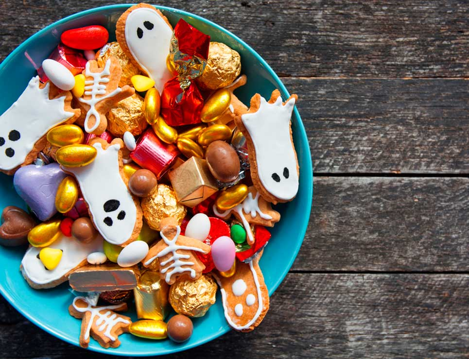

Flor De Cempasúchil
Descripción
La flor de Cempasúchil es originaria de México, su nombre proviene del náhuatl “Cempohualxochitl” que significa “veinte flores” o “ varias flores”. Nuestros antepasados asimilaban el color amarillo de la flor de cempasúchil con el sol, razón por la que la utilizaban en las ofrendas dedicadas en honor a sus muertos. La tradición marca hacer senderos con las flores de cempasúchil, desde el camino principal hasta el altar de la casa con la finalidad de guiar a las almas hacia los altares.
Altar

Descripción
El altar de muertos es un elemento fundamental en el conjunto de tradiciones mexicanas del Día de Muertos, que consiste en instalar altares domésticos en honor de los muertos de la familia donde se ofrece como ofrenda alimentos, velas, flores y objetos de uso cotidiano del difunto. El altar de muertos busca que tanto los vivos como los muertos puedan compartir un momento de reunión, al repartir el pan, el agua, la sal, el vino, entre otras cosas que contiene la ofrenda.
Pan De Muerto
Descripción
Término con el que se designa a distintos panes de dulce de diferentes masas y formas que se elaboran para conmemorar el día de Muertos o de Todos los Santos. Se trata de un estilo de pan de carácter ceremonial que se coloca en los altares dispuestos para honrar la memoria de los seres queridos.
Velas
Descripción
Velas y veladoras, que significan la luz, la fe y la esperanza y se utilizan para guiar a las ánimas de regreso a sus hogares. En algunas comunidades indígenas, cada vela o veladora representa un difunto, por lo que la cantidad dependerá del número de almas que quieran recibir.
Copal
Descripción
El copal era ofrecido por los indígenas a sus dioses ya que el incienso aún no se conocía, este llegó con los españoles. Es el elemento que sublima la oración o alabanza. Fragancia de reverencia. Se utiliza para limpiar al lugar de los malos espíritus y así el alma pueda entrar a su casa sin ningún peligro.
Dulces
Descripción
Actualmente, el altar de muertos se decora con diferentes platillos y bebidas que gustaban a los “fieles difuntos” y con una gran variedad de dulces, como las tradicionales calaveritas, las cuales se elaboran con una técnica llamada alfeñique (palabra que deriva del sánscrito “phañita” y significa pasta de azúcar), misma que fue introducida por los españoles durante la conquista. Consiste en una especie de caramelo formado de azúcar.
Imagenes
Descripción
Honra a la persona que fue en vida. Algunas comunidades ponen la imagen
escondida para que sólo se vea en un espejo y así dan a entender que se
puede ver pero no existe.
fotografía de Niños
Las fotografías de niños difuntos eran llamadas de “angelitos”, debido la inocencia de las criaturas que encontraban una muerte a tan temprana edad. ... La fotografía mortuoria no tenía un sentido morboso. Era sólo una forma de duelo y un recuerdo que conservaba la familia del familiar querido que había dejado este mundo.Agua
Descripción
El agua, está relacionada con la fuente de vida, por lo que se ofrece a las ánimas para aliviar la sed del difunto después del largo recorrido que tuvo que hacer para llegar al que alguna vez fue su hogar, e incluso en algunas religiones el agua también está ligada a la pureza de las almas
Sal
Descripción
Elemento purificador que ayuda al cuerpo a no corromperse en su traslado. Es la parte esencial de la celebración de muertos; se cree que las ánimas regresan a disfrutar los platillos, a probar la fruta y a contemplar la flor de cempasúchil que se les ofrece. De esta forma, vivos y muertos se reencuentran en una dimensión que les permite convivir.
Cruz
Descripción
Una cruz grande de ceniza, sirve para que al llegar el ánima hasta el altar pueda expiar sus culpas pendientes. El altar puede ser adornado con papel picado, con telas de seda y satín donde descansan también figuras de barro, incensario o ropa limpia para recibir a las ánimas. Elemento introducido durante la evangelización, se coloca en la parte superior del altar; a veces está formado con ceniza, otras con sal o pétalos de cempasúchil.